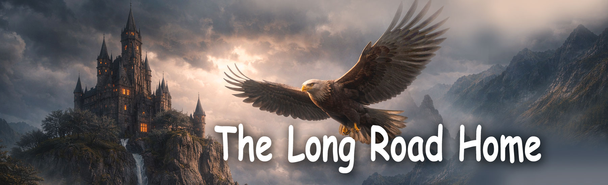

Fairy Tales of Philomur the Cat
faithfully recorded by his devoted admirer — Michel the Rat

The Long Road Home
Chapter 1 | Chapter 2 | Chapter 3 | Chapter 4 | Chapter 5 | Chapter 6 | Epiloge
CHAPTER 1 — The Kidnapping
It was such a clear, peaceful day that it seemed nothing bad could possibly happen. The young goose Clara was sitting on the soft, warm grass, crocheting a lace collar for her new dress. She hummed quietly to herself, keeping an eye on her son — gosling Phil.
Clara didn’t simply love him — she adored him with all her heart. He was her firstborn, long-awaited and precious. And like all mothers, Clara dreamed of giving him what mattered most: curiosity and a love of learning. She believed that if a child understands the world, he becomes kinder, wiser, and stronger.
Phil turned out to be an exceptionally gifted little gosling. Just think: on his very first day he learned several letters, and a few days later he was already forming words with wooden cards! He absorbed knowledge so quickly that Clara barely had time to rejoice at each new “Mum, look!”
To encourage his curiosity, Clara bought Phil a children’s globe with a light inside, so he could study continents, oceans, and countries in the evenings; also a real school microscope, to examine the tiniest details of nature — feathers, blades of grass, insect wings.
Phil could sit by the globe for hours, switching on the lamp and whispering the names of countries that hardly seemed to fit into his head. And the microscope became his best friend: today he was chasing grasshoppers again to study their legs and antennae. Clara watched her son and thought, “How lucky I am. He’s so bright… so full of light…”
But suddenly, the light darkened. At first she thought a cloud had covered the sun. But it was a shadow. A shadow of wide, soaring wings. It appeared without a sound — like a lightning strike without thunder. A golden eagle. He came down from the sky in a rapid dive, like a black arrow. His talons closed around Phil — faster than Clara could draw breath.
“Phil!!!” she screamed. Clara rushed forward. She fought desperately, with all the strength of a mother protecting her child. She pecked at the eagle, beat him with her wings, clung to his feathers — but it was useless.
“Stop it, you foolish hen!” the eagle roared, his voice shaking the air. “One more move — and I’ll crush your chick right in front of you!”
Clara froze. Her legs buckled beneath her. She fell to the ground, trembling, pleading with her eyes, but knowing — she was powerless. The eagle lifted Phil higher, gripped him tighter, and soared into the sky.
The last thing Phil heard was his mother’s desperate cry, torn straight from her heart: “Phiiiil!!!” Bright sunlight blinded him, and the familiar farmyard disappeared below, becoming a tiny distant spot. That was how the most difficult story in the life of a small, curious gosling began.
Top of the page
CHAPTER 2 — The Eagle’s Heir
Phil felt as if the air around him had turned solid, like a wall of ice. The wind beat against his face, chilled his neck, and tore the last strength from his chest. His little legs trembled, and the eagle’s sharp talons dug into his soft body. But Phil still did not cry. He did not want to give this frightening eagle the satisfaction.
They flew for a long time — so long that Phil lost all sense of where east and west were, and where his home farmyard might be. All he could see was sky, endless and indifferent. Then suddenly, the wind dropped. The eagle began to descend.
They landed on the high tower of a dark castle standing on the top of a sheer cliff. The tower looked ancient and grim, as if it had grown out of the night itself. The eagle set Phil down on the cold stone floor. The gosling staggered, but stayed on his feet. The predator spread his wings — the air shuddered — and spoke in a voice as cold as a winter river: “Chick. I have been watching you for a long time.”
Phil flinched. Watching him? When? Why?
“You are clever. You are brave. You did not cry even when I lifted you into the sky. That was the first test — and you passed it. I like you.” He lowered his head so close that Phil could feel the hot breath of the huge bird. “I am the Eagle. Lord of the skies. And I have chosen you as my heir.”
Phil blinked in astonishment. “H–heir?..”
“Yes. Not everyone is worthy of continuing my line. I have seen how you learn, how you think, how you read… Mind and will — that is what makes a worthy eagle. You are extraordinarily fortunate. But you must prove yourself worthy of this great mission.”
Phil was silent. He was too small to understand the full meaning of the eagle’s words. But one feeling came through clearly: The eagle wanted to give him a future… but take away his past.
As if reading his thoughts, the eagle continued: “Forget your foolish mother and that farmyard. You saw it yourself, chick: she abandoned you. She backed away. She chose herself over you.”
Phil pressed his wings to his body. He knew — that was a lie. But the eagle’s words were like heavy stones: pressing down, breaking, suffocating. “From now on you are an eaglet. From this day you will learn from me: to fly high, to think broadly, to hunt without pity. I will raise you to be a lord of the skies.”
He bent closer and hissed into Phil’s ear: “But you must obey me without question. Because I — I alone and no one else — know how to raise an eaglet.”
Phil swallowed. His heart beat like a tiny drum. He trembled, but he held himself together and did not cry. He felt that something big lay ahead — something new and frightening at the same time. In his small chest lived the memory of his mother, his farmyard, warmth. That memory stopped him from breaking. And yet the future pulled him — and frightened him.
The eagle looked at him with a cold, confident, royal gaze. He was absolutely certain: this little gosling would become whatever he desired.
Top of the page
CHAPTER 3 — Eagle Training
From that day on, Phil’s life changed completely. Morning began with a sharp command: “Get up, eaglet! Lesson awaits!” Phil flinched at the harsh voice but quickly got up — he didn’t want to disappoint the Eagle. He tried to stand straight, like a real eaglet, even though his little legs trembled with cold and fear.
Flights over ancient worlds
At first, it was beautiful. The Eagle lifted Phil high into the sky — up where the wind sings so loudly it drowns out thoughts. From above, Phil saw Egyptian pyramids, Sumerian ziggurats, temples of ancient India, roads and cities. The world below looked vast, like an endless book.
“An eagle must know the history of the world,” said the Eagle sternly. “He who does not know the past is not worthy of ruling the present.” And he spoke of peoples, gods, stars, legends — quickly, sharply, but amazingly precisely.
Phil listened with his beak half open. He loved learning — he always had. But never before had so much knowledge crashed down on him at once. After history came lessons in Latin, Ancient Greek, even Sanskrit. Phil repeated the words in a tiny, squeaky voice — but persistently. “Wrong! Again!” shouted the Eagle. And Phil repeated. Again and again.
Lessons of wisdom: mathematics, physics, chemistry, biology
Then came the lessons Phil liked most. The mathematics lesson. The Eagle wrote a strange line on a stone slab:
“This is a magic ring — Euler’s formula,” he said. “He who understands its meaning understands the laws of the Universe. It is a key to the greatest mysteries of existence. Remember it. At first — simply as a pattern.”
Phil did not understand what exp was, or what π or i meant, but he felt that this line was incredibly beautiful — balanced, harmonious, almost alive. And most importantly — those who understand it can understand everything. And Phil wanted to understand it.
Then the Eagle drew twisted lines and symbols. “These are Maxwell’s equations. They describe lightning, the laws of light, the breathing of stars.” Phil stared at the symbols, spellbound, and longed to understand their hidden meaning.
Next — chemistry. The Eagle drew a neat hexagon. “This is a benzene ring. Its electrons form a shared cloud. That makes the ring extraordinary strong, and that is why it appears in us, in animals, in the sweetness of berries, in the scent of herbs.” Phil marvelled: How could a tiny little ring exist in books and in flowers?
And in biology, the Eagle showed a spiral: “This is DNA. The book of life. We receive it from our ancestors and pass it on to those who will come after us. In it is written everything needed to become oneself.” Phil listened — and felt that the world was vast, complex, glowing with secrets. At times, it even seemed that the Eagle was revealing real magic to him.
Lessons of strength and shadow
But then came the hunting lessons. And something inside Phil tightened, shrank, hurt. The Eagle taught him: how to look from above, how to choose prey, how to fall like a stone, how to kill quickly, fiercely, without doubt or pity. “Pity is weakness!” he repeated. “If you want to survive — be ruthless!”
Phil tried. He truly tried. But each time, his heart twisted with fear and pain. He saw trembling creatures, heard their squeaks — and could not do it. “If I don’t hunt, I won’t be strong… But must strength always be cruel?” And he remembered his mother’s words: “Kindness is also strength.”
He wanted to be strong, like the Eagle. Clever, knowledgeable, brave. But he also wanted to be like his mother: kind, warm, real. His soul was being torn in two.
The first great question
After an especially difficult lesson, the Eagle spoke again in his cold voice: “Eagles are the best. We are born to rule. And geese… filth. Weakness. Mud. You must rise above them! Above everyone!”
Phil stayed silent for a long time. He pressed his wings neatly to his body and quietly asked: “Why… is being an eaglet better than being a gosling?”
The Eagle froze. “What did you say?”
“What makes geese worse than eagles?” repeated Phil, trembling, but now more boldly. “My mother is kind. She loves me. She taught me to read… She bought me books… She flies — just not as high. And geese… they’re not weak. They’re just… different.”
The words hung in the air like a light feather. The Eagle exploded: “Different?! Geese are low! They will never see the world as I do! And you must be above all — strong, cruel, beyond doubt!”
“Is strength… everything?” Phil whispered.
Punishment
That was the last straw. The Eagle struck with his wing — so sharply that Phil fell onto the stones. He grabbed him by the scruff and dragged him down — into the underground cellar.
“You think too much, miserable chick! There is a perfect place for thinking. Sit there. Think in silence. Cold and darkness will teach you what questions are allowed here.” He threw Phil into a cold stone closet and slammed the heavy iron door.
It became dark. Still. Cold. Phil sat, hugging his knees with his wings. He did not cry — crying would only anger the Eagle more. But inside, a real battle raged: “I want to be strong… But not like this. I want to be smart… But not cruel. Mum said: kindness is strength. The Eagle says: weakness. Whom do I believe?..”
He closed his eyes. He sat in the darkness — small, confused, but thinking. And right there, in the blackness of the cellar, began the path of his own thoughts. Not eagle thoughts. Not goose thoughts. His own.
Top of the page
CHAPTER 4 — A Friend in the Dark
The darkness in the cupboard was so thick it felt alive. It sat beside him, breathed in the corners, rustled somewhere behind his back. But Phil did not cry. He sat quietly, hugging himself with his wings, and listened to his little heart beating: “I am strong… I’m not afraid… Well… almost not afraid…”
Suddenly — a faint rustle. Very careful. As if someone tiny was creeping along, avoiding every plank. Phil froze. The rustle came closer… And right by his feet a small, funny voice whispered: “Pee-pee… You there? Still alive?”
Phil jumped. “W-who’s there?”
“Oh, nobody… just old rat Elizabeth at your service!” whispered a thin, confident voice. And then he felt something small, warm and furry press against him. “Don’t be scared,” said Elizabeth. “I don’t bite. Well… almost never.”
Phil let out a relieved breath. “I’m not scared… it’s just… so dark…”
“Everyone is scared in the dark,” said the rat with authority. “Even big, terrifying eagles. They just pretend they aren’t.” Phil smiled quietly — for the first time in a long while.
⭐ Talking in the dark
“How did you get here?” asked Elizabeth, settling next to him.
“The Eagle… punished me,” Phil whispered. “I asked why geese are worse than eagles… And he got angry.”
The rat snorted: “He’s always angry when someone thinks differently from him. That’s just how he is.”
Phil sighed: “He’s strong… and clever… Sometimes I think… maybe he’s right?”
Elizabeth touched his wing with her whiskers — almost like a mother would. “Strong and clever is good,” she said. “But you’re clever too. And strong. But most importantly — you are kind. That’s the hardest and most important thing of all.”
Phil thought for a moment. “How do you know what’s right?”
“Your heart tells you,” the rat said simply. “Just listen. I once wanted to be like eagles too: fast, proud. But then I realised — I’m a rat. And rats can be wise. We are small… but we survive.”
A warm little spark lit up in Phil’s chest. “Do you think… I can be a gosling and… strong?”
“Of course!” Elizabeth lifted her nose proudly. “Strength isn’t claws. Or cruelty. Strength is choosing your own path… and walking it.” Those words fell into Phil’s heart like a seed, and began to grow at once.
A gift in the dark
Elizabeth rustled in the corner. She pulled something, dragged it, puffed… And suddenly a crunchy piece of dry bread dropped by Phil’s feet. “Here,” she said. “I stole it from the kitchen. Heavy, but tasty. You need it more. You’re small and cold.”
Phil’s eyes widened. “For me?..”
“Who else?” snorted the rat. “There’s no one else in here.” The dry bread was hard but good, with a sweet hint, like the edge of a honey pie. It warmed him from inside. “Thank you…” Phil whispered.
“Don’t thank me,” Elizabeth sniffed. “I’m lonely too. And two is always better than one. Even in a cupboard.”
Hope
A long, cold night passed. Phil thought — about the Eagle, about his mum, about Elizabeth’s words. And he understood two important, new words: I — myself. I — am not alone.
He had a little heart that could tell good from cruelty. And now — he had a friend. From the crack in the door came a soft voice: “Hang in there, little one… I’m with you.” And that’s how Phil learned: even in darkness you can find light. Sometimes light is just a little rat with wise eyes.
Top of the page
CHAPTER 5 — The Trial, the Fury and the Escape
TThe morning was gloomy and cold. The wind lashed the walls of the castle like wet whips. The cupboard door burst open with a deafening creak — the Eagle stood in the doorway, dark, frowning, dangerous. Elizabeth had vanished in advance — she had slipped into her crack like a shadow.
“Chick,” he said in an icy voice. “I thought too highly of you. There is a mistake in your upbringing. And I must correct it.” He set Phil down in front of him. “Today you will hunt properly. You will show that you are not a gosling. You will show that you are an eagle.”
Phil felt that something was wrong. The voice was too quiet. Too calm. Usually that meant only one thing: danger. The Eagle led him into a large stone hall. The walls were covered with ancient scratches, stains of time and marks of claws.
“Today is a special lesson,” said the Eagle. “You will prove that you are an eagle. I shall throw you some prey. You must grab it and kill it. Without mercy. Without hesitation. Otherwise you will become my prey.” He stretched out his talon and flung a grey bundle.
The bundle moved. It trembled. Phil braced himself — and suddenly his heart plummeted. It was Elizabeth. He whispered, “Her?..”
The Eagle nodded. “Yes. That rat is far too cheeky. Too cunning. She knows all the holes. She steals. She is prey. Your prey.”
Elizabeth looked straight at Phil. Her eyes were shining — but not with fear. Only with a quiet plea: “Don’t do it…”
Phil took one step. Then a second. His heart was pounding so loudly it drowned out his breath. The Eagle watched him, leaning forward, his wings trembling with tension. He was waiting. And in that moment Phil understood everything. This was not a lesson in hunting. It was a lesson in cruelty. A lesson in obedience. A test — would he break and become like the Eagle.
Phil lifted his head, looked straight into the Eagle’s eyes and said, “No.”
“What did you say?!” roared the Eagle.
Phil was shaking, but he stood firm. “I don’t want to kill her. She… is my friend.”
At that very second Elizabeth darted to the side — and Phil deliberately slowed his movement, giving her a chance. She slipped between his feet, dived into a crack in the wall and disappeared.
The Eagle exploded. “COWARD!!! WORTHLESS WORM! WEAKLING!!!” The wind from his wings struck Phil, knocking him off his feet. The eagle’s eyes blazed with fury. He seized Phil in his talons and dragged him over the stones, then roughly flung him back into the cupboard. “You will STAY here until you learn to be an eagle!!!” he roared, slamming the door. Darkness swallowed everything.
A friend returns
Phil sat down on the cold floor. His heart was thudding as if it wanted to escape. “What if I was wrong? What if I should have obeyed?.. But he himself said — be strong. And strength is also being able to say ‘no’…” He closed his eyes — and felt his mother’s wings. Warm. Soft. Loving. As if she were whispering, “You did everything right.”
A rustle. Quiet, familiar. “Pip-pip-pip… I’m here.” Elizabeth slipped out of the crack — a little ruffled, but in one piece. She pressed herself against Phil. “Thank you. You saved my life.” She pulled out a big crunchy piece of bread. “Here. You’ve honestly earned it.”
Phil smiled through his tears. “But what now? He hates me…”
“That doesn’t matter,” said Elizabeth. “He’s angry because he doesn’t know how to be kind. You do. And that is your strength.” She unfolded a scrap of paper. “Here. A map. An old plan of the castle and the paths. With it you can get out unnoticed.” Her eyes gleamed. “We have to run tonight. While he’s asleep. If you stay, he will break you.”
“But the door…”
“The door is my problem,” the rat said confidently. Elizabeth nimbly climbed onto the huge rusty key. She braced her paws. Started pushing with all her might. “One… Two-oo… Just a bit more!..” Phil leaned his shoulder against the door. The metal groaned and squeaked… And at last — click! The door gave way. Cold air rushed in — smelling of freedom.
The way home
Elizabeth led Phil along the dark corridor to the old gate of the yard. She spread out the map. “Listen carefully, little one. Here are the holes, ravines and paths marked. The main thing is the direction.” She pointed her paw to the east. “Your home is there.”
“I know… that’s where Mum is.”
Then she tapped the opposite side. “But you must fly west.” Phil didn’t understand. “But that’s… the other way?..”
“Yes. Because the Eagle is cunning. He will wait for you in the east. He’s a hunter. He will guess your route.” The rat gently touched his wing. “Sometimes, to get home… you first have to fly the wrong way.”
Phil looked at the map. Small. Exhausted. But already wise. “So… the journey will be long?”
“Yes. But the right one.” She snuggled up to him. “I believe in you.”
“And you?..”
“I have my own path,” said the rat. “I’m a rat. I’ll survive. But you — fly home. They’re waiting for you there.”
Phil bent down and gently touched her head with his beak. “Thank you…”
“Off you go. Before it’s too late.” He spread his wings. Rose into the night sky. And for the first time in a long while he was not flying under orders — but following the call of his heart. The moon lit his path. The wind caught his wings. He was flying home. And down below, in the shadow of the castle, Elizabeth watched him go and whispered, “Fly, little gosling. Fly to where you are loved.”
Top of the page
🌟 CHAPTER 6 — The Long Way Home
The night was dark and thick, like velvet. But Phil flew with certainty — wherever the wind tossed him, his little heart knew: the road was leading home. He flew for a long time. His wings ached, his back throbbed, his feet cramped with pain. But Phil did not stop. “I must… Mum is waiting…”
The Lake of Swans
When it grew completely dark, Phil came down to the shore of a great lake. The water shone like silver, and on its surface glided white swans — majestic, cold and proud. Phil stepped into the water. It reminded him of his own pond, where Mum Clara had taught him to swim. The water received him gently, like an old friend.
He swam closer — perhaps they could show him the way? But the swans only cast him a haughty glance. “Goose?” “Not one of ours.” “And not a swan. Let him swim.” And they glided away in their royal silence, splashing his tail with water.
Phil did not take offence. He simply understood: Not all who are big are kind. And not all who are small are weak. He chose the path towards the forest.
The Whispering Forest
The forest greeted him with the rustle of leaves and the voices of the night. The pines stood like dark pillars, the fir-trees whispered high above, and the shadows lived a life of their own. But Phil was not afraid. He was no longer the tiny chick whom the Eagle had snatched away. He had Elizabeth’s map. And, more importantly, he had his own heart, which had chosen the way.
He flew for a long time. Sometimes he landed, shivering with cold beneath a bush, closing his eyes… But each time he rose into the air again. When morning came, he saw from above: familiar fields, a familiar little road, the old orchard, and — the poultry yard.
The Return
The yard was almost the same as before. Only it seemed quieter. Far too quiet. By the old shed sat Clara. She had grown very old. Her feathers had lost their shine, her wings had drooped, her gaze was tired and empty. She was knitting. As always. But her hands were slow and weak. She was not looking at the sky. She was no longer waiting.
But suddenly she heard a soft sound — the quiet beat of small wings. She raised her head. Phil was standing in front of her. Ruffled, thin, grown-up. But alive.
“Mum…” he said softly. “It’s me.”
Clara slowly rose to her feet. She touched his wing — carefully, unbelieving. Yes. Him. Alive. And then her wings opened by themselves. She had almost no strength left — but love gave it back in a single instant. She hugged him in the way only those are hugged who were no longer expected. “My little boy… you’ve come back…”
Phil buried his beak in her feathers. “I always remembered the way. Because you are my mum. And a heart always knows the road home.”
The poultry yard came to life. Geese honked, hens ran about, ducks flapped their wings. But Clara heard no one. She held her son close. And Phil understood: This is what real height is. Not the sky. But love.
Top of the page
✨ EPILOGUE — For Those Who Come Back
Many days passed — or perhaps weeks. The yard lived its own life again. Phil grew — fast, strong and confident. Sometimes he rose high into the sky, just as the Eagle had taught him… But his heart gently reminded him: “Fly high — but do not become cruel.”
He remembered the Eagle’s lessons — strength, height, sharp sight. But he remembered something else as well: The strong do not have to be cruel. The clever do not have to be harsh. And even the one who flies higher than everyone else needs those who wait for him below.
In the evenings he told his mum about ancient worlds, about stars, pyramids, the winds of deserts. And she listened, looking at him as one looks at the dearest miracle.
One day the master himself came into the yard — Vasily Voldemarovich. He listened to Phil’s stories with keen interest, and then he asked: “Would you like to go on studying? I can teach you the exact sciences. You were made for them.” Phil agreed with joy.
Sometimes he asked his mum: “Why was I able to come back?” Clara smiled. “Because the heart always knows the way. Even if home is in the east and you flew towards the west. Memory is the road.” And Phil knew: The one who is loved will always find their way back. And the one who comes back becomes stronger.
🌿 About Elizabeth
Somewhere far away, in the old roots of a tree, lived the wise rat Elizabeth. Alive, nimble and well content. She often told the little rat-children a story: “I once had a friend. A gosling. Small — but with a great heart. He did not become an eagle, as the cruel master wished. He became himself. And that is the hardest and bravest thing of all.”
The young rats listened with their mouths open. And they thought that being yourself was the most wonderful thing in the world.
The End
Top of the page
🌟 Questions and tasks for the young reader
1. What is this chapter about? Tell the story in 3–5 sentences.
2. Who is the main character in this chapter? Describe them: appearance, personality, and mood.
3. If you could ask the main character one question, what would it be? Write it down — and try to answer it as the character.
4. What choice did someone make in this chapter? Do you agree with it? What would you do differently?
5. Find 5–10 new words in the chapter. Write them down, look up their meanings, and make one sentence with each word.
6. Pick your favourite line or moment. Why did it stand out to you?
7. Imagine an extra short scene that could happen next. Write 3–6 lines of dialogue.
8. Give this chapter a new title. Explain why you chose it.
9. How did this chapter make you feel? Choose three words (for example: curious, worried, happy, surprised) and explain your choice.
10. Choose one scene you remember best. Draw it, and add small details you think are important.